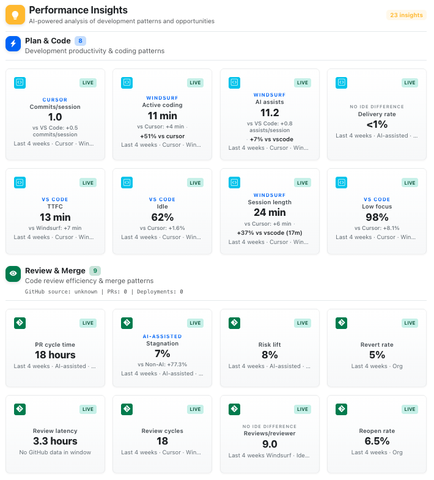
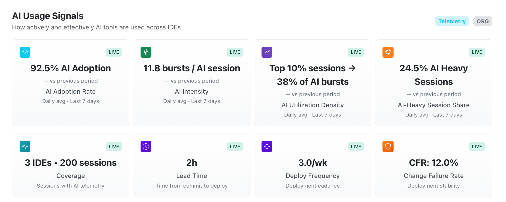
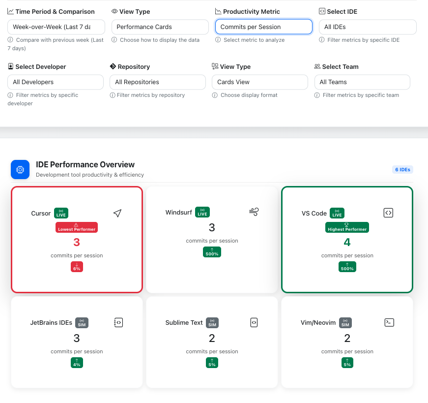
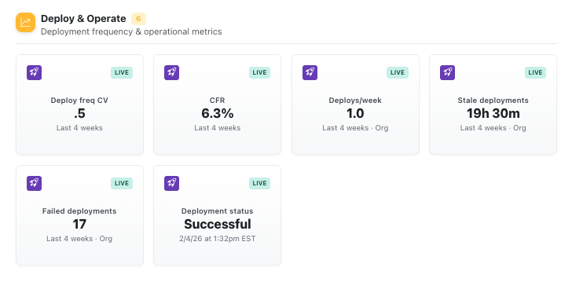
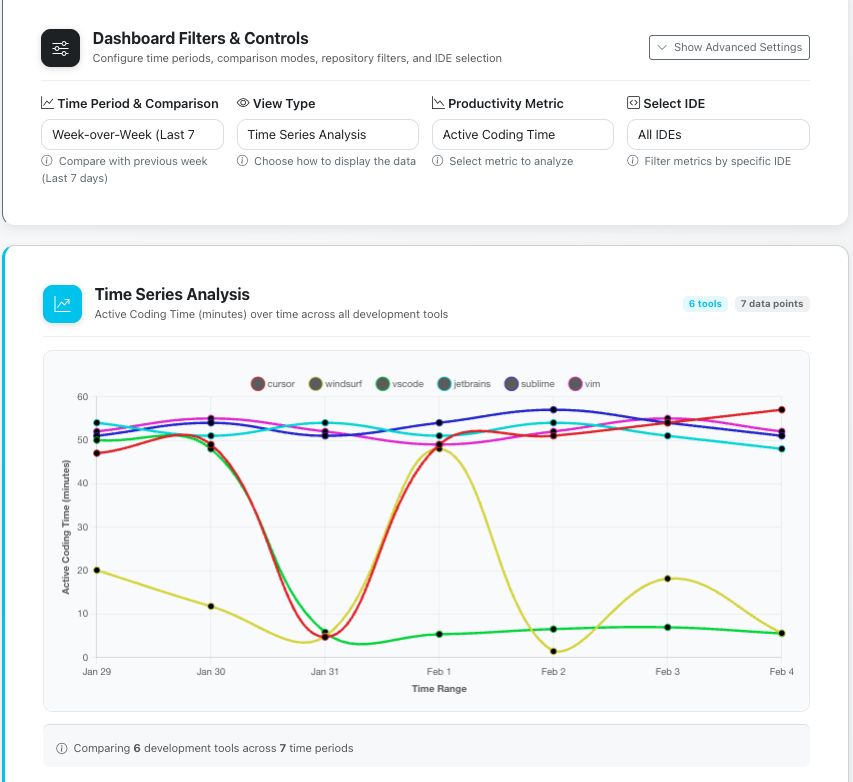

Your AI tools might be slowing your team down.
More code does not always mean faster delivery. ChaosMonkey shows engineering leaders where AI is helping, where it is hurting, and what to fix next.
AI doesn’t just speed things up. It moves the bottlenecks.
Most teams can see adoption. Few can see whether AI is creating shipped value, review drag, rework, or reliability risk.
We don’t track AI usage. We diagnose its impact.
ChaosMonkey connects IDE activity, model usage, GitHub workflow data, and delivery outcomes into one decision system for engineering leaders.
Detect
See where AI is changing behavior across coding, review, merge, and delivery.
Explain
Understand why performance improved, stalled, or moved the bottleneck somewhere else.
Act
Get recommendations for tool decisions, rollout priorities, workflow fixes, and ROI optimization.
The useful answer is rarely “AI usage went up.”
ChaosMonkey is built for the moment an engineering leader realizes the problem is not adoption. It is impact.
More code reached PR review, but cycle time moved in the wrong direction.
Same tools, different outcomes. ChaosMonkey shows where rollout is actually working.
Compare models, IDEs, teams, and repos without guessing from vibes.
See where AI gains turn into delivery drag.
Most tools fragment your engineering story across dashboards. ChaosMonkey connects AI usage patterns to workflow behavior and delivery outcomes.
- Plan & Code: IDE adoption, model usage, and session patterns
- Review & Merge: PR dynamics, reviewer load, rework, and cycle time
- Deploy & Operate: reliability, recovery, and downstream risk

Stop buying AI tools from vibes.
Understand impact at every level: individual developer, team, repository, IDE, model, and workflow.
Filter by time range and metric to isolate what is actually driving performance gains, bottlenecks, or reliability shifts.
- Usage and output by developer, team, repo, and IDE
- Model-level and tool-level performance comparison
- Time-based trend analysis across the org

Find the stage where delivery actually breaks.
The review stage is where AI’s indirect effects surface: larger PRs, reviewer concentration, rework, and cycle time risk.
ChaosMonkey identifies those patterns before “more AI” quietly becomes “more bottleneck.”
- PR size dynamics and reviewer load
- Cycle time and review concentration risk
- AI’s impact on code review patterns

Tie AI behavior to reliability, not just output.
Failed deployments and recovery time are ultimate indicators of workflow health. Most tools cannot connect them back to upstream behavior.
ChaosMonkey traces deployment reliability back to AI adoption patterns, review dynamics, and workflow changes.
- Deployment failure rate correlation
- Recovery time and downstream reliability analysis
- Reliability tradeoff insights

Not just data. Decisions.
Dashboards show what happened. Performance Insights tells you what changed, why it matters, and what to do next.
Our recommendation engine surfaces meaningful changes in AI behavior, workflow dynamics, and delivery outcomes — prioritized by expected impact.
- Clear “what changed / why / what to do”
- Prioritized optimization opportunities
- Tool, workflow, and rollout decisions backed by evidence

Not another dashboard. An AI impact diagnosis layer.
ChaosMonkey is not retrofitted engineering analytics. It is built around the uncomfortable question engineering leaders now have to answer: is AI making delivery better, or just busier?
Not activity tracking
Usage is only useful when it connects to outcomes.
Not vanity productivity
More code means nothing if review, rework, or reliability gets worse.
Built for decisions
Know which tools to expand, which workflows to fix, and where AI is actually paying off.
See what AI is actually doing to your team.
Where it is helping. Where it is hurting. What to fix next. Founder-led onboarding for engineering leaders serious about AI performance and ROI.
No credit card required.